Interactions
State machines are suitable to show the behavior of a single component at a time, and define its behavior in terms of states and transitions. We have also seen that state machines are used to define a protocol, as for instance TCP, by showing the behavior of each of the communication partners. Sequence diagrams, on the other hand, are used to specify the interactions between the components of a system. Interactions can happen through method-, function- or operation-calls, or via signals. Sequence diagrams specify therefor behavior by looking at the sequences of interactions between several components. These components can be within the same computer or far away from each other. Some of the components may not even be software.
Learning Goals
After this week, you will be able to:
- Create syntactically valid sequence diagrams.
- Validate sequence diagrams.
- Reason about design choices using sequence diagrams.
- Compare sequence diagrams based on their trace semantics.
- Find and resolve implied scenarios.
An important difference to state machines is that sequence diagrams usually do not model complete behaviors, but only show selected scenarios that a developer wants to show. More on that later. Let’s first get some intuition on sequence diagrams.
Intuition on Sequence Diagrams
Sequence diagrams are an effective and intuitive way to describe the communication between several communicating partners. Have a look at the following dialogue:
That’s pretty much how sequence diagrams work, they show messages between participants. Each participant in a sequence diagram is represented by a vertical line, called lifeline. The horizontal lines are messages. Time flows downwards, so that the messages make up a conversation.
With this little knowledge, you can already understand most sequence diagrams. What follows are refinements of this concept and additional modeling elements so we can more precisely express how a software system communicates. This is necessary to prevent misunderstandings between developers and when we want to detect design flaws in our systems at an early stage.
Participants and Lifelines
Each participant in a sequence diagram is represented by a lifeline, shown as dashed lines. It’s okay to show them as solid lines, which may sometimes be quicker when you make a sketch by hand. Lifelines are always drawn parallel to each other, and follow a vertical orientation. You will never see a sequence diagram with horizontal lifelines. If you do, it’s not a sequence diagram.
Lifelines can represent software concepts like components, modules, objects or classes. They can also represent entities from reality, like human users. The diagram below shows how a human user who presses a button on a car key. The car key then sends a radio signal to the car, which in turn confirms to the user by blinking the lights.
The top of the lifeline shows a box that refers to what the participant represents in this sequence diagram. The label in this box consists of three parts: a role name, a selector, a class name.
role[selector]:Class
Let’s look at an example to understand the difference between these. Below you see a sequence diagram of a home automation system. There are several roles: sensor and light. The role name is a name that refers to the participant’s function within an interaction. From the lifelines that represent sensors, the diagram shows that there are two classes of sensors, TempSensor and HumiditySensor. All of them act as sensors in the system (and hence send signals with the name measurement), which is why they all share the same role. All components communicate with the central unit. Here we have chosen to just give it a class name HouseCentral, since there is only one and we already know that we want to have this class. An alternative would be to just give it a role name, for instance central. You can also see that the sensors have different selectors, which here are strings that refer to different rooms. They show that there can be many sensors (role sensor of the same class (for instance TempSensor). Here, room names make sense. Alternatives are numbers.
A lifeline requires at least a role name or a class name. The selector is optional. Note that the class name is always preceded by a colon (“:”). Usually, role names are in lowercase letters, and class names are written in CamelCase.
Messages
The horizontal arrows are called messages. They represent either the transmission of a signal, or the call of an operation.
Signals represent information that is communicated asynchronously between objects. So far, all messages we have seen have referred to signals. They may refer to the physical touch of a button, a radio transmission, the signal of a light, a sound notification, or any other transmission of information. In the following, many of our signals will represent units of some specific protocol, like an MQTT or AMQP message. Signals are always asynchronous, and therefore use always the symbol for asynchronous messages, which is the solid line with an open arrowhead.
Alternatively, messages in sequence diagrams refer to operation calls. They correspond to functions, methods or operations in programming languages.
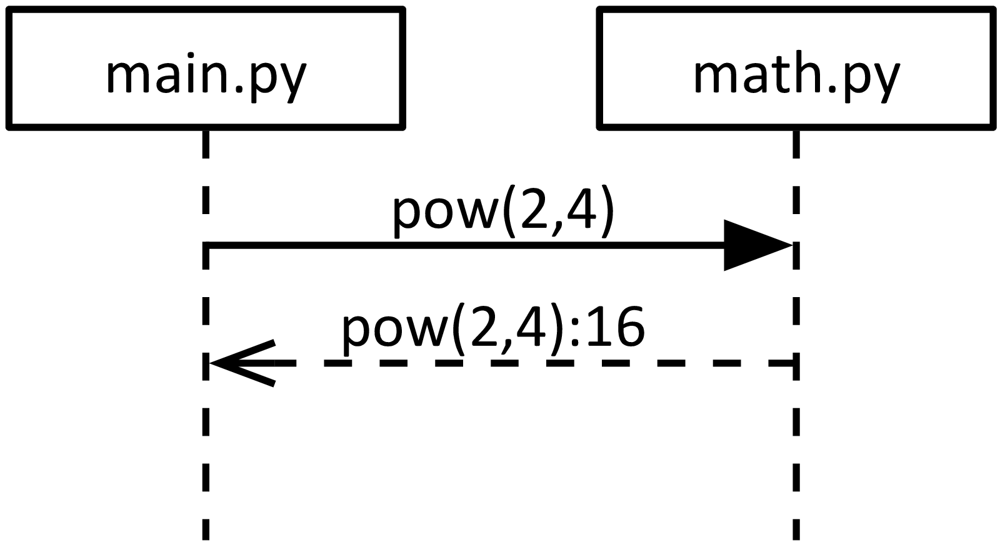
The figure above shows an example of a sequence diagram that shows the communication between a Python main program main.py that calls the pow() function of the math module. As you can see, this interaction is much more complicated than the one with the signals. An operation call consists of two messages: the message that represents the call of the operation, and another one that shows the return of the operation. In the example, the operation also returns a result. The messages are also drawn differently: The call message in this example is a synchronous message, and therefore drawn with a filled arrowhead (as opposed to the open arrowhead of the message that describes a signal). The return message has an open arrowhead, but is painted with a dashed line. Therefore, this is a synchronous function call, which represents what the Python program actually does: The calling main.py is blocked (not doing anything) while math.py is calculating the results and then returns.
Sometimes the return message is left away, to reduce the visual clutter of a diagram or just due to laziness. In this course, we don’t do that for didactic reasons, so that we can clearly distinguish the modeling of signals from that of operation calls. If you use messages that represent operation calls, always draw the return messages.
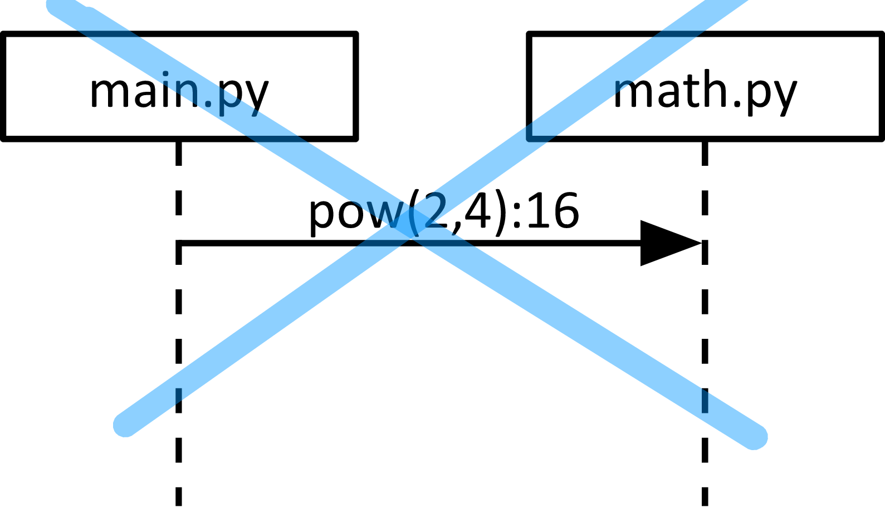
There are also situations where method calls in programming languages are asynchronous. Then, the calling message is shown with the asynchronous message symbol (the one with the open arrow head). In this course, you will probably not use this and can forget about them.
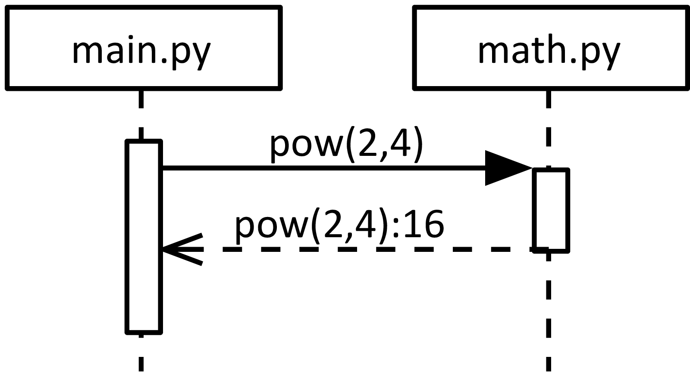
The diagram above shows another element that is sometimes used: execution specifications. These elements illustrate that a participant is active. For instance, the main program is active, then calling pow(), which activates the math module until it returns. In some cases, such an illustration is very helpful, for instance to represent recursive method calls, or illustrate design patterns. In this course, execution specifications are optional. In many situations it is better to focus on the messages and get them right.
Creation and Destruction
In some cases, it is interesting to show that a participant in an interaction is created or destroyed as part of the interaction. This is shown by special messages. Creation messages target the head of the lifeline that they create. Destruction messages target a lifeline that is then terminated with a big termination symbol. Both messages are shown as dashed lines with an open arrow. They can be labeled with the create and destroy stereotypes. The example below shows how the main program creates an object of type Socket and then destroys it again. Note that creation and destruction can be used independently, and that they can be triggered by different participants in the interaction. A lifeline can also terminate itself without a destruction message.
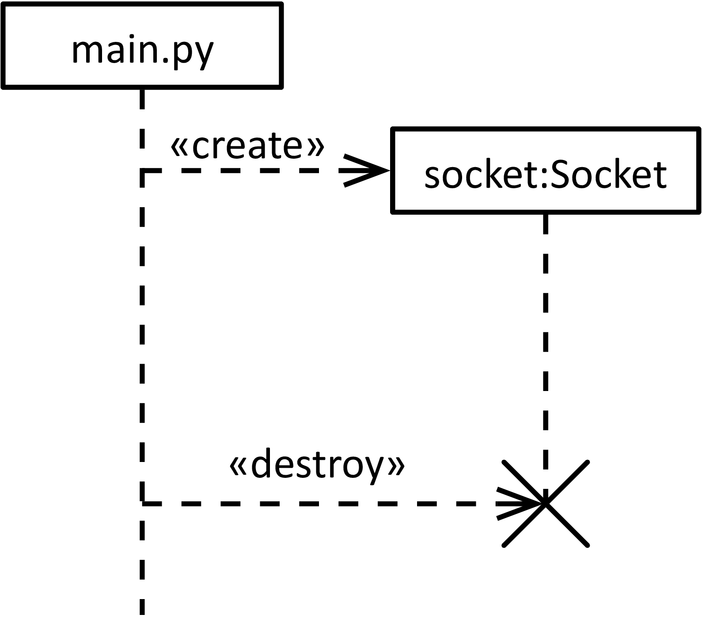
What do Sequence Diagrams Represent?
Let’s take a step back. You have seen that sequence diagrams can represent a wide variety of interactions, and even include elements that are not software. Within software, we can coarsely distinguish two different focus areas covered by sequence diagrams:
Local interactions within a program, i.e., procedure, method or function calls.
Distributed interactions of a system that consists of several components, each running some programs.
Note that both local and distributed interactions are represented with several lifelines. In the local case, they represent different code modules, like Java or Python classes or modules. Within both of these interaction groups, you can use asynchronous signals or synchronous or asynchronous operation calls. This means, there can be local signals, and there are also distributed operation calls.
Sequence diagrams typically only show selected scenarios of the interactions in a system, and do not give a complete picture. That means they do not show all the possible exchanges of messages of a real system, but focus only on a few but interesting ones. This may come as a surprise. If we want to do a good specification job, don’t we have to study all interaction scenarios? The problem is complexity. Sequence diagrams can quickly grow, and a naïve attempt to cover all scenarios just by writing them down results in specifications that confuse rather than clarify. Important aspects of the model will drown in too many details, and the value of modeling is lost. There are several solutions to this dilemma:
We will complement sequence diagrams with state machines, which give a complete picture, but on a local level only.
You will learn how to select the relevant and interesting interaction scenarios that deserve attention, and leave out those that are not relevant.
We will try to build interactions in such a way that the number of possibilities is reduced.
One way of making sequence diagrams more powerful and let a single diagram express more than one scenario is by using combined fragments, which we will look at in the next section.
Combined Fragments
Combined fragments allow you to express more behavioral details in compact ways. Some of them look very much like programming statements, which makes them intuitive to understand. However, it can also be a trap to think of them too much as control statements, since they do not handle operations, but entire scenarios. Rather, think of them as a way to characterize interactions.
alt
The alt fragment specifies alternative scenarios. For instance, a component may ask for access, and the access right may be granted or not. We can show this in the sequence diagram Access below:
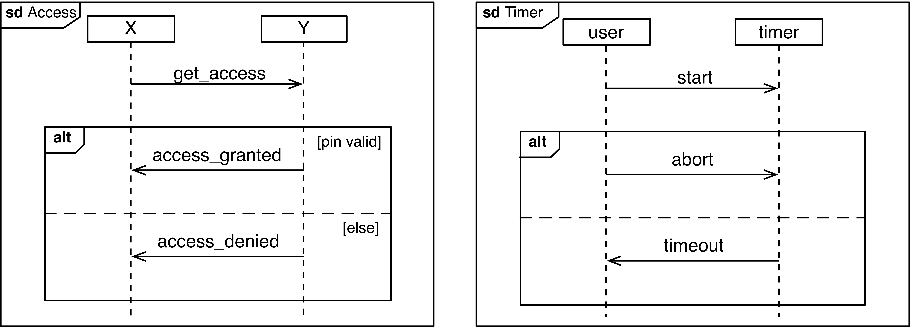
The different compartments are alternatives to each other. There may be any number of compartments, not only two. They are separated by a dashed line. To describe in more detail, when a specific alternative is chosen, the compartments can have an optional guard. This guard may refer to some text or a variable.
Access almost looks like an if-statement. And in fact, the access control component may internally execute an if-statement. But the alt fragment can be even more abstract, since it can describe alternative scenarios, independent of how they are realized. The specification of Timer is therefore equally valid Do you see the difference? The example shows that a timer can be started and then either be aborted or it times out. This time the scenario is more subtle, the alternative is not determined by a single component, but the overall timing of the interaction.
opt
The opt fragment contains behavior that can happen or not. It is similar to an alt fragment with two compartments, one of which is empty. Like with the alt fragment, the opt fragment can have a guard.
loop
With the loop fragment, you can express that a behavior is executed repeatedly. Below, you see the specification of an alarm clock with a snooze function. Within the loop fragment, you see an alt fragment, with different branches of the user either snoozing or stopping the alarm. In case of stopping the alarm, there is also a break fragment. This signals the escape out of the loop. You may also leave unspecified how often the loop is executed.
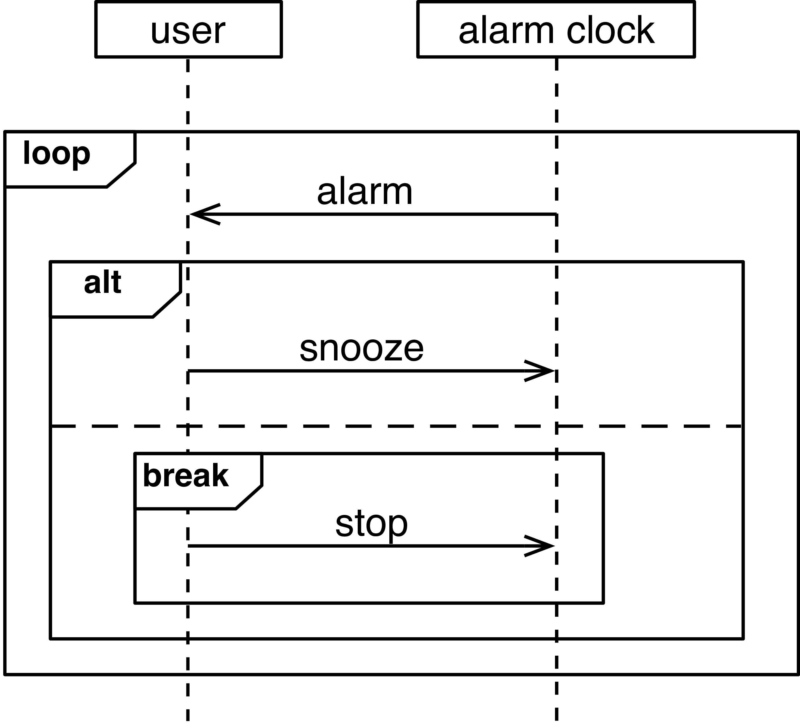
assert and neg
In some cases, you want to assert that a certain interaction must exactly occur as specified. For that, you can place it into an assert fragment. The other way round, you may want to specify negative behavior, i.e., behavior that must not happen. Such behavior can be places in a neg fragment.
ref
With a ref fragment, you can refer from one sequence diagram to another one. This makes diagrams easier to handle. It also allows to reuse a sequence diagram and apply it at several places.
In the example below, we have another definition of the snooze feature of an alarm clock. Here, we used the ref fragment that refers to the sequence diagram itself and by that introduces some recursion. (The blue arrow is just an illustration.) This is probably not a good example in general, but it should work. Note that the outermost frame, labeled “sd alarm” encapsulates the entire sequence diagram.
Time Constraints
In some cases, you want to add time constraints to a specification, to show when an interaction occurs, or how long specific parts of it may or should take. Have a look at the example below:
It shows that the newsletter is sent at 12:00. Five time units later, the student receives the confirmation. The diagram also specifies that the signal inform must be received within two hours.
Event Orderings and Semantics
Let’s have a closer look at the semantics of sequence diagrams, that is, what they mean in detail. We do this by looking at the detailed events that happen as part of an interaction. understanding in which order they are supposed to happen, means to understand what the interaction really means.
The passing of a message A consists of two events:
The message is sent, written as !A.
The message is received, written as ?A.
Ordering Rule 1: Because our universe seems to act causally, a message must be sent before it can be received. For a message A, the only sequence of events that it possible is ⟨!A, ?A⟩.
Ordering Rule 2: A second ordering rule is that of lifelines: Events along the same lifeline are in a total order. Below, this means that lifeline Y receives signal A before it receives B, ⟨?A, ?B⟩.
Now comes the part that may be less intuitive: Events on different lifelines are not ordered, even though they have distinct y-coordinates. In the diagram below, the reception of A and the reception of B are clearly at different y-coordinates. Visually, A happens before B. But this is not an order that the diagram implies. Because these events are not related with each other, the diagram does not tell if any of them happens before each other, despite it may look like it.
For some, this non-ordering of events on different lifelines may not be intuitive at the first glance. The following illustration may help you to understand it: Imagine that the events along a lifeline are connected to it by rings. The rings can move up and down along the lifeline, and the message can get a different slope depending on the position on the rings. Rings attached to the same lifeline can not pass each other. Therefore, the diagrams below all look different, but imply the same ordering among the events, irrespective of their absolute position on the lifelines. What counts is that A is received before B, and this does not change in any of the diagrams.
The slope of messages is hence only a means of illustration. A recommendation is to use horizontal messages where possible, and messages with a downwards slope when you want to show that messages cross each other. (That comes later.) Avoid messages with an upwards slope.
The example below shows a sequence diagram with two messages, and four distinct events:
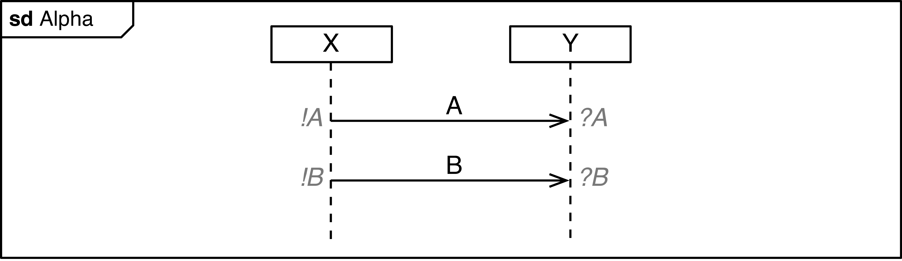
Intuitively, we already know one sequence in which these events can happen, that is, we know that ⟨!A, ?A, !B, ?B⟩ is one valid trace. However, it is not the only possible trace. To find the other traces, we may start by writing down all possible different combinations we can get from these events. With 4 events, we end up with 24 different traces:
⟨!A, ?A, !B, ?B⟩, ⟨!A, ?A, ?B, !B⟩, ⟨!A, !B, ?A, ?B⟩, ⟨!A, !B, ?B, ?A⟩, ⟨!A, ?B, ?A, !B⟩, ⟨!A, ?B, !B, ?A⟩
⟨?A, !A, !B, ?B⟩, ⟨?A, !A, ?B, !B⟩, ⟨?A, !B, !A, ?B⟩, ⟨?A, !B, ?B, !A⟩, ⟨?A, ?B, !A, !B⟩, ⟨?A, ?B, !B, !A⟩
⟨!B, !A, ?A, ?B⟩, ⟨!B, !A, ?B, ?A⟩, ⟨!B, ?A, !A, ?B⟩, ⟨!B, ?A, ?B, !A⟩, ⟨!B, ?B, !A, ?A⟩, ⟨!B, ?B, ?A, !A⟩
⟨?B, !A, ?A, !B⟩, ⟨?B, !A, !B, ?A⟩, ⟨?B, ?A, !A, !B⟩, ⟨?B, ?A, !B, !A⟩, ⟨?B, !B, !A, ?A⟩, ⟨?B, !B, ?A, !A⟩
Because of the ordering rules from above, not all of these traces are possible. The sequence diagram Alpha from above relates the four events with each other.
Because of message ordering, we know that only those traces are valid ones, in which a signal is sent before it is received. This means, !A must happen before ?A and !B must happen before ?B.
Because of lifeline ordering, we also know that those traces, in which events do not follow the order of the lifeline, are invalid. This means !A must happen before !B, and ?A must happen before ?B.
Exercise: Can you find the traces that violate any of the two ordering rules, and strike them out?
Co-Regions
The diagram Beta below only covers the scenario that A is received by Y before B.
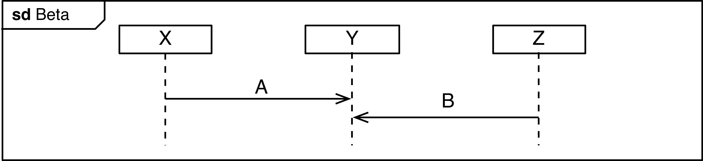
Exercise: Write down all the possible traces that the sequence diagram Beta allows.
In reality, it will be hard or impossible to ensure that this order is maintained, especially since the diagram allows to send B first. For a real and robust specification, we should handle such situations. One way is to demand from component Y that it must be prepared to properly handle the arrival of messages A or B in any order. For that, we can use a so-called co-region. These are the brackets placed on the lifeline Y. Within the brackets of a co-region, events on the lifeline are not ordered anymore, i.e., they can happen in any order.
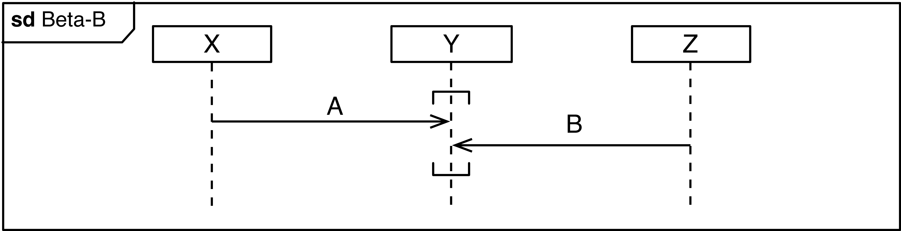
Exercise: Which are the additional traces that are possible, if the events within the co-region (?A and ?B) can happen in any order?
Exercise: Is there a way to handle the situation also in another way? For instance, can you, just by adding a message (and without a co-region), reduce the number of traces so that there is only one possible trace left for diagram Beta-C?
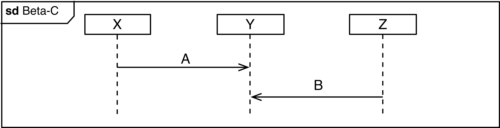
Implied Scenarios
With the sequence diagrams, we describe scenarios, that means, specific and selected examples of the system interactions. Some diagrams cover several scenarios. In most cases, a specification (a set of diagrams) does not document all possible scenarios. This is because it is often not practical to write down all scenarios, and especially when sketching a system it may not be relevant to think about all scenarios right at the beginning.
Once a system specification gets more mature, you need to also develop an understanding how the system handles scenarios that your specification does not explicitly document yet. These scenarios often exist because reality is more complicated than an idealized interaction.
Of course, you could just not care and leave the choice about details to the developer who implements the system. In fact, this is what often happens. However, this is not what you want. This may cause bugs in the system, cost a lot of time of fixing afterwards and in general leads to surprises later on. (And if there is one thing we want to prevent, it is surprises.)
Message Loss
Communication protocols provide different guarantees to the application regarding the delivery of messages. However, even the most sophisticated protocol cannot prevent that a communication link is failing and never recovers. In these cases, the protocol cannot “hide” the problem from the application, and the application itself needs to handle the situation. The scenario Lossy_1 for instance also implies scenario Lossy_2, i.e., that the message is not received. The loss of a message is written with a big cross.
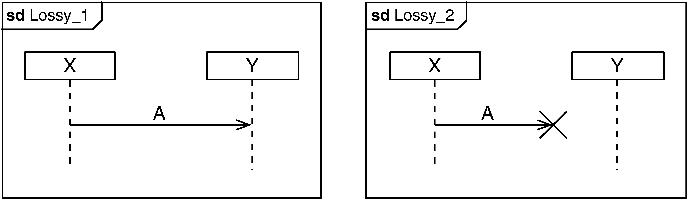
So, whenever there is a diagram in which a message is sent, we should check what would happen if this message got lost. Here are some possible alternatives:
The application is fine even if message A is lost. This can be the case, for instance, if message A is one (of many) messages of the same type that are sent periodically, and where it does not matter if some of them get lost. A sensor that repeatedly sends some measurements is a typical example. (It may be, however, important that the sensor message eventually is sent, i.e., not all of them are lost.
The most common solution is to use acknowledgment messages. This is illustrated in Lossy_3. In case message A is lost, Y does not send an acknowledgement. This is detected by X indirectly, through the expiration of a timer. We show the timer here as a message of X to itself.
Non-Causal Orderings
The diagram below shows an interaction between parts in a movie ticket system. At the end of the purchase process, the terminal sends a pay message to the payment component. The payment component then forwards pay_ok to the ticket printer. The terminal sends the movie selection to the printer. The printer then prints the tickets. We ignore the case that the payment fails.
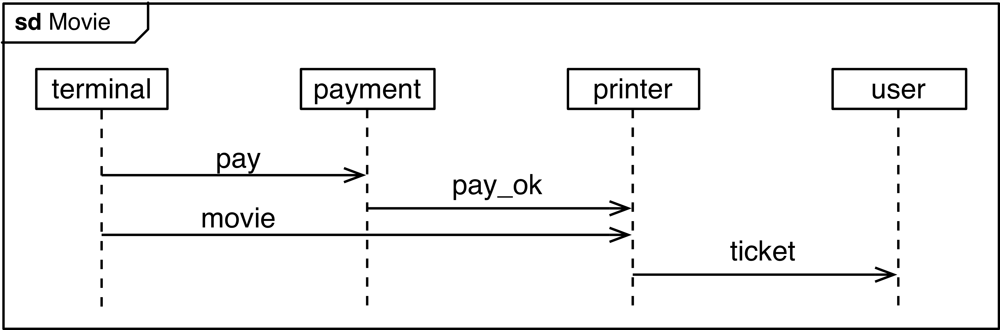
This specification has a trouble spot. The diagram indicates that the movie message is received after the pay_ok message. In a real system, we often have little control on the delay of message transfer. The payment process within payment may also take different amounts of time. In a real system it is therefore difficult, undesirable or even impossible to ensure that movie is received after pay_ok.
One way to fix this situation is with a co-region as in Movie Fix 1, to express explicitly that the two signals can arrive at the printer in any order. The implementation of the printer must then take care of this.
Another way is to change the way the entire interaction works. Instead of sending pay_ok to the printer, the payment component may also return it to the terminal, shown in Movie Fix 2. The terminal can then send the movie message after the payment is confirmed. In this case, we may also use a synchronous message for the payment as in Movie Fix 2x, since the terminal may anyways be waiting for it and not do anything else.
Note: The original sequence diagram is not wrong, but depending on the context, type of system and the subsequent development process and implementation, the non-causal ordering of the events may be a source of trouble.
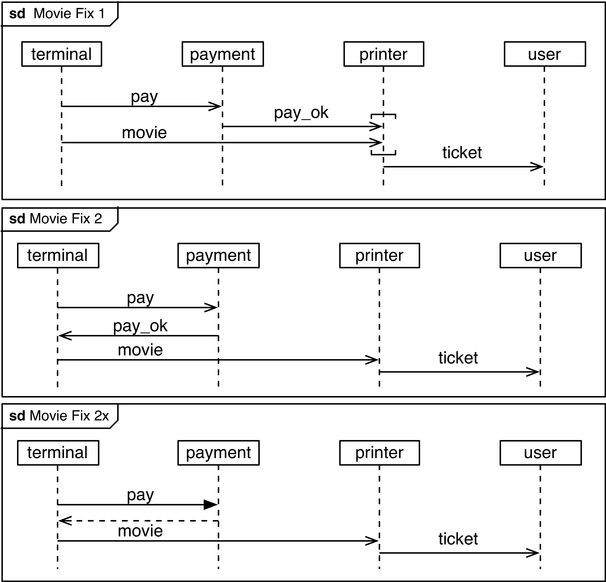
Mixed Initiatives
Consider the following alarm system. A sensor may detect an alarm and send message alarm to a subscriber. The subscriber may then confirm the alarm via message confirm. The alarm can also be stopped by the sensor via stop. This is shown in the two diagrams below.
The two different scenarios seem pretty straight-forward. However, these two scenarios imply a third one: What should happen, if the alarm is stopped by the sensor, but the subscriber confirms it, right before it receives the stop message? We call this scenario a mixed initiative, since it involves a situation where several participants may take initiative and send a message. This situation may seem like a rare coincidence, but it is only a matter of time and you will observe this situation. We can illustrate it in another diagram:
So what to do about this? If you only provide the sequence diagrams above, it is not clear how an implementation should respond in this situation, i.e., when an alarm is both confirmed and cancelled. In this case, you need to find out what the application should do. Depending on what kind of alarm it is, the stopping may overrule the confirmation, or vice-versa. The diagram Confirm and Stop shows one way to address the mixed initiative, using a simple comment.
Epilogue: The Value of Sequence Diagrams
You may ask yourself: Why should I use sequence diagrams? Can’t you just immediately build a state machine or write code for your system? Of course, you could. But then again, would you build a house before drawing it?
Depending on the project, sequence diagrams may be mandatory and part of a formal specification, or they may just be something that you scribble on a whiteboard or a piece of paper. The actual value of writing down interactions by sequence diagrams comes then from the following:
They make you think about interactions.
They enable you to explain interactions to others, discuss interactions in team.
They let you find trouble spots.
You can resolve intricate situations.
So, the value of sequence diagrams depends on how they are used in the development process, and how they effectively improve the system design. In some cases, just the fact that you sit down and sketch some interactions changes your view on the system, leads to good design choices and prevents errors in the first place. A single relevant sequence diagram, sketched on a paper that uncovers problems in your system design early, can save millions in whatever currency.